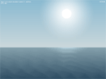
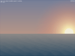
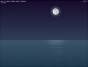

Пример 08 - Полный штиль
Этот пример демонстрирует использование специальных эффектов и моделирования сложного
освещение.



Оттенки Неба
Чтобы нарисовать небо мы будем пользоваться спрайтом без текстуры:
hgeSprite *sky;
sky=new hgeSprite(0, 0, 0, SCREEN_WIDTH, SKY_HEIGHT);
Его верхние и нижние вершины окрашены в разные цвета, плавно переходящие друг в друга:
hgeColor colSkyTop;
hgeColor colSkyBtm;
sky->SetColor(colSkyTop.GetHWColor(), 0);
sky->SetColor(colSkyTop.GetHWColor(), 1);
sky->SetColor(colSkyBtm.GetHWColor(), 2);
sky->SetColor(colSkyBtm.GetHWColor(), 3);
sky->Render(0, 0);
Цвет неба зависит от времени суток и вычисляются посредствам интерполяции между несколькими
константными значениями:
hgeColor col1, col2;
col1.SetHWColor(skyTopColors[seq[seq_id]]);
col2.SetHWColor(skyTopColors[seq[seq_id+1]]);
colSkyTop=col2*seq_residue + col1*(1.0f-seq_residue);
col1.SetHWColor(skyBtmColors[seq[seq_id]]);
col2.SetHWColor(skyBtmColors[seq[seq_id+1]]);
colSkyBtm=col2*seq_residue + col1*(1.0f-seq_residue);
Море и Волны
Похожая техника раскрашивания применяется и для моря. Но в этот раз мы воспользуемся классом
hgeDistortionMesh вместо класса hgeSprite
для моделирования волн:
hgeDistortionMesh *sea;
sea=new hgeDistortionMesh(SEA_SUBDIVISION, SEA_SUBDIVISION);
sea->SetTextureRect(0, 0, SCREEN_WIDTH, SCREEN_HEIGHT-SKY_HEIGHT);
Чтобы создать водны, мы установим перемещение и окраску для каждого узла сетки искажения (мы опустим
первую и последнюю строчки так как мы не хотим, чтобы они двигались):
for(i=1; i<SEA_SUBDIVISION-1; i++)
{
// these are constants for each vertices line
a=float(i)/(SEA_SUBDIVISION-1);
col1=colSeaTop*(1-a)+colSeaBtm*a;
dwCol1=col1.GetHWColor();
fTime=2.0f*hge->Timer_GetTime();
a*=20;
for(j=0; j<SEA_SUBDIVISION; j++)
{
sea->SetColor(j, i, dwCol1);
dy=a*sinf(seaP[i]+ // precalculated phase shift
(float(j)/(SEA_SUBDIVISION-1)-0.5f)*M_PI*16.0f-fTime);
sea->SetDisplacement(j, i, 0.0f, dy, HGEDISP_NODE);
}
}
Теперь установим окраску для пропущеных первой и последней строк узлов сетки искажения:
dwCol1=colSeaTop.GetHWColor();
dwCol2=colSeaBtm.GetHWColor();
for(j=0; j<SEA_SUBDIVISION; j++)
{
sea->SetColor(j, 0, dwCol1);
sea->SetColor(j, SEA_SUBDIVISION-1, dwCol2);
}
Теперь море готово и мы рисуем его одним единсвтенным вызовом:
sea->Render(0, SKY_HEIGHT);
В настоящем исходном коде еше добавлена эмуляция луны и солнца. Чтобы это сделать, мы просто добавим
немного белый окрас в узлы сетки искажения которые находятся прямо под солцем/луной.
Небесные Тела
Звезды, луна и солнце являются просто масштабированными и подкрашенными спрайтами:
hgeSprite *sun;
hgeSprite *moon;
hgeSprite *star;
sun=new hgeSprite(texObjects,81,0,114,114);
sun->SetHotSpot(57,57);
moon=new hgeSprite(texObjects,0,0,81,81);
moon->SetHotSpot(40,40);
star=new hgeSprite(texObjects,72,81,9,9);
star->SetHotSpot(5,5);
Интересная деталь - хало и отражения на поверхности воды. Это тоже обычные спрайты:
hgeSprite *glow;
hgeSprite *seaglow;
glow=new hgeSprite(texObjects,128,128,128,128);
glow->SetHotSpot(64,64);
glow->SetBlendMode(BLEND_COLORADD | BLEND_ALPHABLEND);
seaglow=new hgeSprite(texObjects,128,224,128,32);
seaglow->SetHotSpot(64,0);
seaglow->SetBlendMode(BLEND_COLORADD | BLEND_ALPHAADD);
Заметьте, что спрайты хало различаются методами смешивания, чтобы достичь правильных цветов. Так же
заметьте, что оба спрайта делять одну и туже область текстуры.
Позиция солнца и луны, масштабирование и окраска вычисляются в функции UpdateSimulation
и затем все объекты отображаются в функции RenderSimulation:
glow->SetColor(colSunGlow.GetHWColor());
glow->RenderEx(sunX, sunY, 0.0f, sunGlowS);
sun->SetColor(colSun.GetHWColor());
sun->RenderEx(sunX, sunY, 0.0f, sunS);
glow->SetColor(colMoonGlow.GetHWColor());
glow->RenderEx(moonX, moonY, 0.0f, moonGlowS);
moon->SetColor(colMoon.GetHWColor());
moon->RenderEx(moonX, moonY, 0.0f, moonS);
Тоже самое для отражений на море:
seaglow->SetColor(colSeaGlow.GetHWColor());
seaglow->RenderEx(seaGlowX, SKY_HEIGHT,
0.0f, seaGlowSX, seaGlowSY);
Заметьте, что спрайт отражения на море масштабируется не пропорционально.
Производительность
Несмотря на видимую сложность, этот пример выполняется с довольно высоким FPS. Это становится
возможным благодаря выводу спрайтов через Direct3D, узким местом является пропускная
способность текстур. И этот пример рисует всего лишь несколько спрайтов из маленькой текстуры.
Большие области экрана заполняются сплошным цветом.
Полный исходный код с детальными комментариями для этого примера вы можете найти в директории tutorials\tutorial08.
Требуемые медиа файлы можно найти в директории tutorials\precompiled.
Используйте клавиши 1 по 9 чтобы изменить скорость воспроизведения, 0 для
реального времени и ESC чтобы выйти.
|